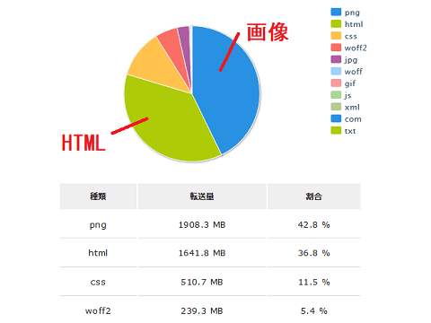
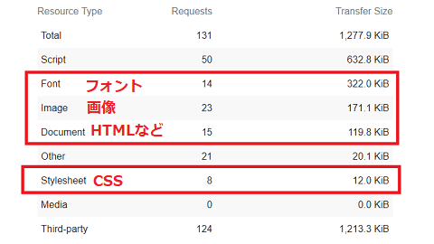
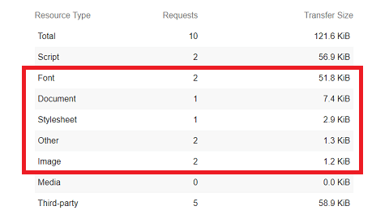
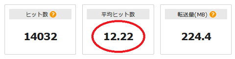
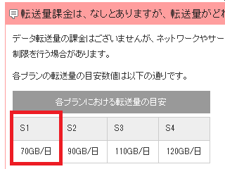

レンタルサーバーの「転送量」とは？
レンタルサーバーの転送量はアクセスログを閲覧すると分かりやすいです。
例えば、こちらは当サイトの先月のアクセスログを集計した解析結果になりますが、どのファイルでどれだけの転送量があったのかを閲覧することができます。

PNGやJPGなどの画像ファイルやHTMLファイル、CSS、あるいはCMSへのアクセスなど、全てのデータ転送量を合計したものがレンタルサーバーの「転送量」になります。
当サイトでは「画像」と「HTML」のファイルで転送量のほとんどを占めていますが、すべてを合計しても「5GB/月」程度しかありません。
一方、レンタルサーバーでの転送量の目安は、エックスサーバーのX10プランで「900GB/日」、ロリポップの格安エコノミープランでも「50GB/日」はありますし、さくらの格安ライトプランでも「200GB/日」となっているため、制限がかかる心配はまずないです。
けれども、格安サーバーのなかには「1ヶ月8GB」程度のケースもあり、そのようなレンタルサーバーでは追加の課金や利用制限がかかる可能性もあります。そのため、サイトの転送量に見合ったサーバーを選択されることをおすすめします。
ブラウザのダウンロードサイズとの違い
こちらは、当サイトのトップページのダウンロードサイズをChrome拡張機能のLighthouseでチェックしたものですが、「Total」の合計で1.3MB程度となっています。

HTTP Archiveによると、WEBサイトの中央値が「約1900KB」とのことなので、当サイトの1277KBは軽い方なのかもしれません。
このなかで「Script」が画像ファイルよりも大きいサイズになっており、約50％を占めていますが、上記のレンタルサーバーの転送量にはこれに該当する箇所がありません。これはアクセス解析や広告関連のScriptになるため、Googleなどのサードパーティーのサーバーからの配信となり、レンタルサーバーからは配信されないからです。
YouTube動画をホームページ上に貼り付ける場合でも、YouTubeのサーバーから配信されるため、レンタルサーバーからの転送量は増えないことになります。
例えば、こちらはサイトマップのページになりますが、広告などを掲載せず、アクセス解析のみのため「Script」のサイズがかなり小さいです。

どちらも「Total」から「サードパーティ」を引くと「約60KB」程度のサイズになりますが、こちらがレンタルサーバーからの転送量になるため、ブラウザのダウンロードサイズとは違う意味になります。
レンタルサーバーの転送量を減らす方法
転送量が増える最大の原因は画像ファイルになるため、画像のデータサイズを圧縮するなりして最適化しておくことをおすすめします。
ウェブサイトのなかには10MB程度のページもありますが、HTMLファイルやCSSのみで10MBにはまずなりませんので、大部分は画像が最適化されていないことが原因です。
高画質の5MB程度の画像を100KBに圧縮して使用しても、人間の目にはその違いがほとんど分からないため、できるだけ圧縮して使用することをおすすめします。また、jpgで保存する方が軽くなるのにpngにしていたり、逆にpngがよいのにjpgで保存していたりと、保存するファイル形式の違いで容量が大きくなるケースもあります。
また、当サイトでは画像よりもWEBフォントの方がサイズが大きいページもありますが、サブセット化をしてファイル容量を圧縮しておくことをおすすめします。
そのほか、HTMLやCSSの空白などを削除して圧縮する方法もありますが、そもそもファイルサイズが小さいですし、圧縮してもせいぜい10％とか20％程度の削減のため、あえて見づらくしてまで圧縮する意味はないかもしれません。
そのため、いかにして画像サイズを少なくするかがポイントになります。
データ転送量とページビューの目安
データ転送量は、Google Analyticsのような「Webビーコン型」のアクセス解析ではわかりませんが、レンタルサーバーに付属されている「サーバーログ型」のアクセス解析で確認することができます。
一般的なアクセスログの解析画面には「ヒット数」が表示されていますが、「ヒット数」は画像やアイコン素材、CSSなどへのリクエストのことを指しています。

例えば、そのページで「20KBの画像」を「10個」使用していれば、そのページを表示するのにHTMLファイルとCSSファイル、画像ファイル10個で合計12個のファイルが使用されることになります。
この場合は１ページビューでも12ヒットとなり、転送量も合計で「200KB」程度になるはずです。1,000ページビューなら200MB程度になるかもしれません。
■「20KB」の画像10個の場合
1,000PV → 12,000ヒット → 転送量：200MB
一方、「テキストのみ」で「画像なし」のページなら、HTMLファイルとCSSファイルのみで2ヒットとなり、転送量が「20KB」程度のこともあります。
■画像なしの場合
1,000PV → 2,000ヒット → 転送量：20MB
そのため、同じ１ページビューでも、画像などのヒット数によっては転送量に10倍以上の差が出ることもありますし、サイトによって異なるため、一概に何ページビュー以上なら転送量が上限に達するということはありません。
■当サイトの事例
ちなみに、当サイトのようなテキスト主体の静的なホームページの場合、CMSツールによるアクセスはなく、画像なども圧縮して利用しているためデータの転送量は少なめです。自サイトでは上記のLighthouseのデータを見る限り、１ページビューあたり「約60KB」程度です。
一方、当サイトで利用しているSIXCOREの転送量の目安は「70GB/日」となっています。

仮に、この「70GB/日」を「73,400,320 KB/日」としますと、１日で「約122万PV/日」という計算になりますが、当サイトがこの上限に達する心配はまずないと考えています。
どのレンタルサーバーでも、転送量の目安はヘルプページなどでたいてい公開されていますので、あとは自分で計算した１ページビュー当たりの転送量から逆算してみるとよいでしょう。
レンタルサーバーの「容量」と「転送量」の違い
一方、サーバーのデータ容量が「50GB」などといった場合、200KBの画像を10,000個アップロードして2GB分のスペースを消費するとか、10KBのHTMLファイルを10万個アップロードして1GB分の容量を消費するといった意味になります。
つまり、ハードディスクやSSDなどのディスク容量のことになります。
また、アクセスログのデータや受信メールも合算される場合には、毎日のログデータと膨大な迷惑メールの受信で知らない間にデータ容量を使い切ってしまう場合もあります。もし容量を使い切ってしまった場合、FTP接続でファイルをアップロードしようとしてもできなくなり、アクセスログや受信メールなども残らなくなるので注意しましょう。
ただし、サーバー上に容量の大きなファイルを置いていたとしても、そのファイルにアクセスがなければデータの転送量もゼロになるため、「データ容量」と「転送量」は違う意味になります。
一般的なレンタルサーバーの場合、転送量も容量もかなりの余裕を持って設定されているケースが多いため、それほど心配する必要はありません。